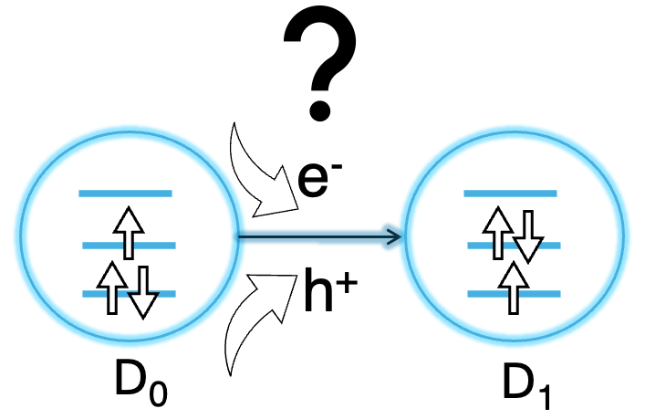

Radical OLEDs: A Different Route to Highly Efficient Light
How does an organic radical actually reach the excited state from which it emits light? In our recent preprint, we set out to map this microscopic journey.
OLEDs, electrons, and a little quantum mechanics
OLEDs are now part of everyday life. They illuminate the pixels in smartphones, televisions, watches, and many other displays. But behind every glowing pixel lies an interesting quantum mechanical problem: when positive and negative charges meet inside an organic material, which electronic state do they form, and can that state efficiently produce light?
In a conventional closed-shell fluorescent molecule, all electrons are initially paired. When an electron and a hole recombine, spin statistics lead to the formation of both singlet and triplet excitons.
Approximately 25% are expected to be singlets and 75% triplets. Ordinary fluorescence can use the singlet excitons efficiently, but emission directly from the triplet state is spin-forbidden.
Modern OLED technologies have developed clever ways around this problem. Phosphorescent emitters and thermally activated delayed fluorescence (TADF), for example, can harvest triplet excitons.
Organic radicals offer something fundamentally different.
What makes a radical special?
A radical contains an unpaired electron. This means its electronic structure is different from that of a conventional closed-shell molecule.
Instead of describing the relevant ground and excited states as singlets and triplets, organic radicals can have a doublet ground state, D0, and an emissive doublet excited state, D1.
D1 → D0 + light
Importantly, this doublet-to-doublet transition can be spin-allowed.
Radical OLEDs therefore bypass the conventional singlet–triplet exciton constraint rather than trying to recover triplet excitons after they have formed.
Experiments have demonstrated nearly 100% doublet-exciton formation in radical OLEDs. If competing non-radiative processes can be sufficiently suppressed, this means that radical emitters can, in principle, approach 100% internal quantum efficiency (IQE).
But there was still a surprisingly basic question
We know that the D1 state can emit light.
But under electrical excitation, how is D1 actually formed?
An OLED does not simply place a molecule directly into its emissive state. Electrons and holes move through the material, charges can become localised on different molecules, and several charge-transfer and recombination pathways may be possible.
So I like to think of D1 as the destination.
We know where the light comes from. But what microscopic road takes the radical there?
Mapping the possible routes
In our recent preprint, Timothy J. H. Hele and I investigated this problem using quantum-chemical calculations together with Marcus-type electron-transfer modelling.
We studied three TTM-based radical emitters: TTM-1Cz, TTM-3PCz, and TTM-3NCz, considering them in a minimal CBP-host environment.
Rather than assuming a particular mechanism from the beginning, we compared several competing possibilities:
- anion-mediated pathways,
- cation-mediated pathways,
- charge–charge annihilation pathways,
- and pathways involving electronically excited charged species.
For each route, the important question is not simply whether it can be drawn on paper. The energetics must be favourable and the corresponding electron-transfer process must occur at a competitive rate.
One pathway consistently stands out
Across the radicals we studied, our calculations point toward an anion-mediated charge-recombination mechanism as the most consistently plausible route to forming the emissive D1 state.
D0 → Radical Anion → D1 → Light
In simple terms, the neutral radical first accepts an electron, producing a negatively charged radical species.
Subsequent recombination with a positive charge can then populate the excited D1 state from which light is emitted.
Our calculations also suggest that excited-anion pathways could contribute indirectly. Higher-lying electronic states can first be populated and subsequently relax toward D1.
In contrast, the cation-mediated routes we examined were generally less favourable, while competing processes that return charged species directly to the non-emissive ground state were kinetically suppressed in our calculations.
Why does knowing the mechanism matter?
Finding a molecule that emits efficiently is useful. Understanding why it works is much more powerful.
Once we know the pathways responsible for producing D1, we can begin asking design questions rather than relying only on trial and error.
Can the electron affinity of the radical be tuned to favour productive anion formation?
Can the surrounding host material be chosen to make the desired charge-transfer process faster?
Can molecular substitution increase the probability of reaching D1 while suppressing pathways that waste the injected electrical energy?
Ultimately, understanding the mechanism provides a bridge between fundamental electronic-structure theory and the rational design of better OLED materials.
A different way of making light
What I find particularly fascinating about radical OLEDs is that they do not merely improve on the usual closed-shell picture. They change the electronic-state landscape altogether.
The unpaired electron gives us access to doublet states, and the emissive D1 → D0 transition provides a spin-allowed pathway for light emission.
And we can now begin to connect the electrical operation of the device to that final photon through a microscopic sequence:
Charge injection → Anion formation → Charge recombination → D1 → Photon
There is still much to understand, particularly when moving from molecular models toward the complexity of a complete working device.
But having a mechanistic picture gives us something extremely valuable: a set of physical principles that can eventually guide the design of the next generation of radical emitters.
Preprint

Mechanistic Origins of D1 Excited-State Formation in Radical-Based Organic Light-Emitting Diodes
Prashant Kumar and Timothy J. H. Hele